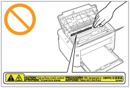

|
|
|
|---|
|
VARNING
|
|
När du ska rengöra skrivaren stänger du av skrivaren och datorn, tar bort gränssnittskablarna och drar sedan ur nätkabeln. Underlåtenhet kan resultera i brand eller elektriska stötar.
Dra ur stickproppen ur vägguttaget med jämna mellanrum och rengör kontakt och vägguttag med en torr trasa för att få bort damm och annat smuts. I dammig, fuktig eller rökig miljö kan ansamlad smuts på stickproppen bli fuktig och orsaka kortslutning och brand.
Rengör skrivaren med en väl urvriden trasa, fuktad med vatten eller en svag diskmedelslösning. Använd inte alkohol, bensin, lacknafta eller andra brandfarliga ämnen. Brandfarliga ämnen som kommer i kontakt med elektriska delar inuti skrivaren kan resultera i brand eller elektriska stötar.
Skrivarens inre innehåller strömförande delar. Var försiktig så att inte eventuella halsband, armband eller andra metallföremål rör vid skrivarens insida när du tar bort felmatade papper eller kontrollerar skrivarens inre. Det kan orsaka brännskador eller elektriska stötar.
Kasta inte förbrukade tonerkassetter på öppen eld. Kvarvarande toner inuti kassetterna kan antändas och orsaka brännskador eller brand.
Kontrollera att nätkabeln och kontakten sätts i ordentligt efter att skrivaren har rengjorts. I annat fall kan det resultera i överhettning och brand.
Kontrollera nätkabeln och kontakten regelbundet. Följande förhållanden kan resultera i brand Kontakta din lokala auktoriserade Canon-återförsäljare eller Canons hjälplinje.
Det finns brännmärken på stickproppen.
Stiften på stickproppen är deformerade eller avbrutna.
Strömmen slås av eller på när nätkabeln böjs.
Nätkabelns isolering är skadad, sprucken eller deformerad.
En del av nätkabeln blir varm.
Kontrollera regelbundet att nätkabeln och kontakten inte är hanterad enligt följande. Underlåtenhet kan resultera i brand eller elektriska stötar.
Kontakten sitter löst.
Nätkabeln är klämd av ett tungt föremål eller fästad med häftklamrar.
Stickproppen sitter löst.
Nätkabeln är hopsnodd.
En del av nätkabeln ligger på ett gångstråk.
Nätkabeln ligger vid en värmekälla.
|
|
OBSERVER
|
|
Försök aldrig själv att utföra service på skrivaren, utöver vad som anges i handboken. Det finns inga utbytbara delar inuti skrivaren. Justera bara de kontroller som anges i instruktionerna i handboken. Felaktig justering kan resultera i person- och/eller materialskador och det är inte säkert att reparationer omfattas av den begränsade garantin.
 Fixeringsenheten och de omgivande delarna inuti skrivaren kan bli mycket varma vid användning. Var försiktig när du tar bort felmatade papper eller kontrollerar skrivarens inre så att du inte bränner dig på fixeringsenheten eller dess omgivande delar.
När du åtgärdar ett pappersstopp eller kontrollerar maskinens inre delar ska du vara noga med att inte utsätta dig för värmen från fixeringsenheten eller det närliggande området någon längre stund. Du kan få brännskador, även om du inte vidrör fixeringsenheten eller det närliggande området.
Var noga med att ta ut allt papper när du åtgärdar ett pappersstopp, så att det inte finns någon pappersbit kvar i skrivaren enligt beskrivningen i meddelandet. Tänk också på att inte sticka in handen i de delar som inte anges på skärmen. Det finns risk för brännskador eller andra skador.
Var försiktig så att du inte smutsar ned händerna eller kläderna med toner, t.ex. när du åtgärdar ett pappersstopp eller byter tonerkassetter. Tvätta omedelbart händerna eller kläderna i kallt vatten om du får toner på dem. Tvätta inte med varmt vatten eftersom det får tonern att permanentas och det blir då omöjligt att få bort den.
Akta dig för tonerstänk när du åtgärdar ett pappersstopp. Du kan få toner i ögonen eller munnen. Om du får toner i ögonen eller munnen ska du omedelbart skölja med kallt vatten och kontakta sjukvårdsupplysningen.
Var försiktig när du tar bort papper som har fastnat så att du inte skär dig på papperskanterna.
Var försiktig när du tar ur en tonerkassett så att du inte får tonerstänk i ögonen eller munnen. Om du får toner i ögonen eller munnen ska du omedelbart skölja med kallt vatten och kontakta sjukvårdsupplysningen.
Försök inte plocka isär tonerkassetten. Du kan få tonerstänk i ögonen eller munnen. Om du får toner i ögonen eller munnen ska du omedelbart skölja med kallt vatten och kontakta sjukvårdsupplysningen.
Var försiktig om toner läcker ut från kassetten så att du inte andas in eller får toner på huden. Om du får toner på huden ska den tvättas bort med tvål. Kontakta sjukvårdsupplysningen om huden blir irriterad eller om du andas in toner.
|